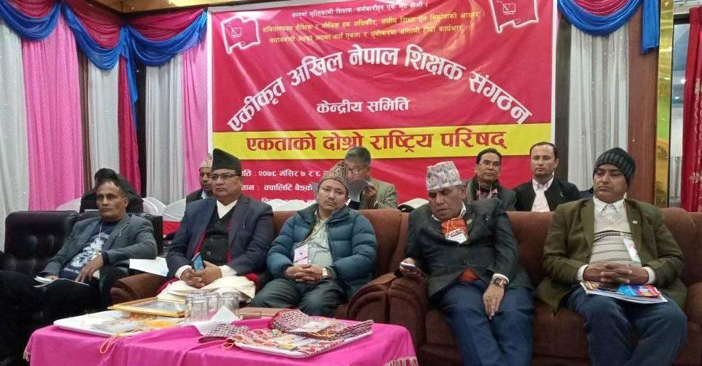
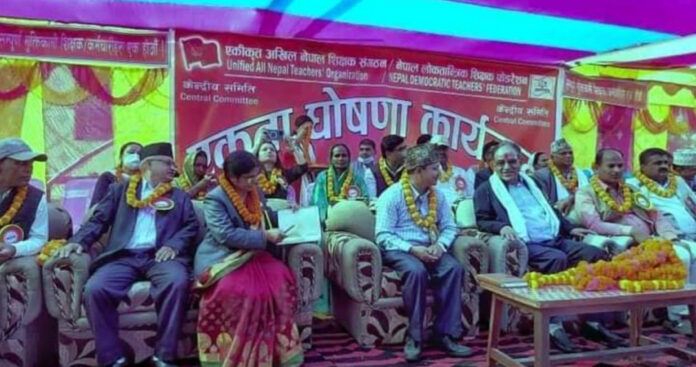
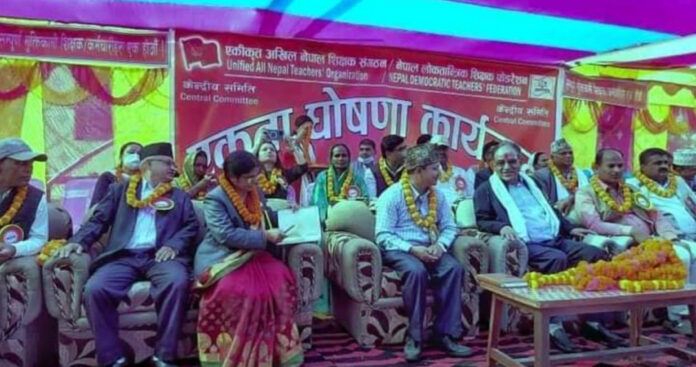

नेपालको राजनीतिक र सामाजिक क्रान्तिमा शिक्षकहरुको ठूलो योगदान रहेको छः अध्यक्ष प्रचण्ड अखिल नेपाल शिक्षक संगठन एकताको दोस्रो राष्ट्रिय परिषद् ।

 .main-content {
}
p {
color:Black;
text-align:left;
}
.main-content {
}
p {
color:Black;
text-align:left;
}
नेपालमा रहेका सबै विद्यालयहरुमा कार्यरत शिक्षक तथा कर्मचारीहरुको राजनैतिक अधिकार सिहतको ट्रेड गुनियन अधिकारकाे सरक्षण सम्बर्धन र विकासका सबै समाजको क्रान्तिकारी रुपान्तरण र सम्बृद्धि राजनैतिक बैचारिक चेतनाबाट यसको दायित्व बोध गर्दै जनमुखी शिक्षा शैक्षिक विकास र सम्बृद्धि का लागि आवश्यक जाशक्ति उत्पादनमा लागने उद्देश्यले २०५० सालमा एकीकृत अखिल नेपाल शिक्षक सङ्गठन United All Nepal Teacher' Organization UANTO को स्थापना भएको हाे ।
खगेन्द्र अबस्थि/कैलाली

एकीकृत अखिल नेपाल शिक्षक संगठन UANTO,सुदूरपश्चिम प्रदेश कमिटीले आफ्नो दोस्रो प्रदेश परिषद् बिस्तारित बैठक “राष्ट्रियता,लोकतन्त्र र संबैधानिक सर्बोच्चता हाम्रो अभियान! शिक्षक एकता,संघीय शिक्षा ऐन र समाजबादी शिक्षा नीति UANTO को पहिचान!!” भन्ने मुल नाराका साथ सु.प.को अस्थायी राजधानी धनगढी स्थित श्री त्रिनगर मा.बि.मा भब्यरुपले सम्पन्न गरेको छ।सुदूरपश्चिम प्रदेशका नौ ओटै जिल्ला बाट प्रतिनिधित्व गरि सहभागीको रुपमा २०५ संख्यामा प्रदेश पार्षद सदस्यको रुपमा शिक्षकहरुको उपस्थिति रहेको थियो। भेलामा प्रत्येक जिल्लाबाट रिपोर्टिङ ब्यबस्था समेत गरिएको थियो। दोस्रो प्रदेश परिषद् बैठकको सन्चालन प्रदेश महसचिब रतन प्रसाद जैसीले गर्नुभएको थियो भने अध्यक्षता प्रदेश अध्यक्ष दलबहादुर कार्कीले गर्नुभएको थियो।परिषद्को प्रमुख अथितीको रुपमा एकीकृत अखिल नेपाल शिक्षक संगठनका केन्द्रिय अध्यक्ष शंकर प्रसाद अधिकारी हुनुहुन्थ्यो भने बिशिस्ट अथितिको रुपमा ए.ने.क.पा.(माओवादी )पार्टीका सुदूरपश्चिम प्रदेश सह-संयोजक खगराज भट्ट क.बिनोद तथा पार्टीकै सुदूरपश्चिम प्रदेश सचिब नेपबहादुर चौधरी क.सिंहराज र UANTO को केन्द्रीय महासचिब निमबहादुर के.सी.रहनुभएको थियो।कार्यक्रममा अथितिको रुपमा UANTO सुदूरपश्चिम प्रदेश इन्चार्ज तथा केन्द्रिय उपमहासचिव श्री सुमन कुमार न्यौपाने र UANTOकेन्द्रीय सदस्यहरु नरेन्द्र वड,वीर सिंह धामी, बिक्रम चौधरी र टेकबहादुर चन्द रहनुभएको थियो। कार्यक्रमलाई स्वागत मन्तव्य UANTO सुदूरपश्चिम प्रदेश वरिष्ठ उपाध्यक्ष खडक मन्नीले दिएर बैठक सुभारम्भ भएको थियो भने दोस्रो परिषद् बिस्तारित बैठकको प्रतिबेदनUANTO सु.प.अध्यक्ष दलबहादुर कार्कीले बाचन श्रवण गरि सहभागिहरुलाई बितरण गरिएको थियो।दोस्रो प्रदेश परिषद बिस्तातित बैठकमा तपशिल जिल्लाबाट तपशिल अगुवा शिक्षक नेताहरुले समसामयिक राजनितिक घटनाक्रमको बारेमा भएगरेका र शिक्षा क्षेत्रमा हुनुपर्ने,गर्नुपर्ने काम र गुनासो सहितको आफ्नो जिल्लाको फेहरिस्त रिपोर्टिङका माध्यमबाट गर्नुभएको थियो।
तपशिल १)दार्चुला :जिल्ला सचिब श्री बिनोद कुवर २)बैतडी :जिल्ला सचिब श्री लक्ष्मी दत्त भट्ट ३)बझाङ :जिल्ला अध्यक्ष श्री जन्मजय जोशी ४)डोटी : जिल्ला अध्यक्ष श्री राम बहादुर ऐर ५)डडेलधुरा :जिल्ला सचिब श्री बेद प्रकाश पनेरु ६)अछाम :जिल्ला सचिब श्री हिक्मत रावल ७)कैलाली :जिल्ला सचिब श्री मन बहादुर रावल ८)कंचनपुर :जिल्ला सचिब गोबिन्द ब. ढाट

दोस्रो प्रदेश परिषद् बिस्तारित बैठकलाई सम्बोधन गर्ने क्रममा बिशिस्ट अथिती नेप बहादुर चौधरी क. सिंहराजले शिक्षकका पेशागत अधिकार,पेशाको सुरक्षाको ग्यारेन्टी र नेपालको गुणस्तरीय शिक्षाकोलागी हाम्रो पार्टी ए.ने.क.पा(माओवादी)सुदूरपश्चिम कमिटी शिक्षकका गाग र सबैखाले आन्दोलनमा हातमा हात मिलाएर समर्थनमा ऐक्यबद्धता गर्ने बताउनुभ्यो।
कार्यक्रमलाई सम्बोधन गर्नेक्रममा ए.ने.क.पा.(माओवादी)सुदूरपश्चिम प्रदेश कमिटी सह इन्चार्ज खगराज भट्ट क.बिनोद ले शिक्षकहरुको महिमा सहित संसारका सबै प्रकारका सभ्यता,बिचार,चिन्तन,ज्ञान,संज्ञान र दर्शन भन्दा भन्दा ठूलो शिक्षक हो।किनकी सबैखाले संसारका विद्वान,इतिहासकार,अर्थशास्त्री,दार्शनिक,बिचारक र कवि कथाकार खेलाडीहरुलाई शिक्षकहरुले नै जन्माएको हुन्छ,त्यसकारण राष्ट्र कस्तो बनाउने,देशको सुन्दर सपना तपाइँ शिक्षक साथिहरुले देख्नुपर्छ,यो तपाइँ हरुकै हातमा भएकोसार्गर्भित भनाइ राख्नुभयो।विभिन्न जिल्लाको रिपोर्टिङ र शिक्षकहरुका गुनासाहरुमा केन्द्रित भएर भन्नुभयो”यो बेला पार्टी र प्रणाली गम्भीर खतरामा पुगेकाबेला सबैले पार्टी र प्रणालीको पुनर्जीवन दिन लाग्नुपर्ने भन्दै शिक्षक साथिहरुले गुनासो गर्नेबेला नभएको बताउनु भयो।तपाईं शिक्षकहरुको प्रश्न सुन्नकोलागी यो पार्टी र प्रणाली रहनुपर्ने भएकोले तपाईको हजारौं गुनासा र लाखौ प्रश्न भन्दा पार्टी र प्रणाली प्रमुख भएकोले यसै बिसयमा केन्द्रित हुन र आफ्ना गतिविधि अगाडी बढाउन शिक्षक संगठन र त्यसका अगुवा नेता कार्यकर्तालाई समर्पित हुन आह्वान गर्नुभयो”।
कार्यक्रमका प्रमुख अतिथि UANTO केन्द्रिय अध्यक्ष शंकर अधिकारिले सरकार सिङ शिक्षकहरुका पेशागत अधिकार बालबिकास शिक्षक,बिधालय कर्मचारीको बारेमा गम्भीर ढंगले लागेको र यसमा अझै प्रयासरत रहेको कुरा बिस्तारित बैठकमा राख्नुभयो।संगठनलाई उर्जा र बल प्रदान गर्न सुदूरपश्चिम प्रदेशले गरेको योगदानको स्मरण गरि सुदूरपश्चिम प्रदेशको दोस्रो प्रदेश परिषद् को बिस्तारित बैठकको पुर्ण सफलताको कामना गर्नुभएको थियो।
यसरी करिब बिहानको ११:००बजेबाट शुभारम्भ भएको कार्यक्रम अपराह्नको ६:३० बजेसम्म चलेको थियो। बैठकले बिबिध निर्णय सहित भब्यरुपले सम्पन्न गरि बैठक समापन भएको छ।

 


हाम्रो टिम

शमसेर पुलामी
Softare developer
पेशाले शिक्षक पन्ध्र सोह्र बर्षको शिक्षण पेशामा बिताउदै गर्दा समय अनुसार निरन्तर अपडेट हुनु पर्ने भएकोले आधुनिक सुचना सन्चार प्रविधिमा ध्यानकेन्द्रित हुँदै गयो । पढ्न् पढाउने कामसँगै केही सिक्दै गरेँ सिक्दै पनि छु । यही क्रममा मैले विद्यालयको लागि ग्रेडसिट तयार गर्ने लेखा व्यवस्थापन सम्बन्धि सफ्टवेयर र साना शिक्षक बचत समुह सफ्टवेयर तयार गरेकोछु । आवश्यकता र माँग अनुसार तयार पनि गरिने छ । युट्युब च्यानर्ल खोल्ने कैान बनेगा करोडपति जस्तो डेमोसहितको हाजिरी जवाफ सफ्टवेयर र साना पर्सोनल र अफिसियल वेभसाइट बनाउन सकिनेछ । .

Rosie Meg
Adviser
Click on Shamsher Blogspot for important informational activities related to education including tsc. There is a YouTube icon on the main page of this website. It is shamser pulami official channel. Please subscribe to like and share.

एकीकृत अखिल नेपाल शिक्षक संगठन UANTO
Support Lead
आधुनिक सुचना सन्चार प्रविधि